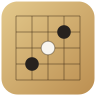

playren
可在浏览器中使用的连珠（Renju）对局室。输入相同的暗号进入同一房间，可进行普通 2 人对局或 4 人配对连珠，其余参与者可以观战。
对局流程
- 进入房间
输入显示名和暗号进入。暗号相同即连接到同一房间。
- 入座
点击空位入座。配对连珠时左右各有上下 2 个座位。点击观战区可返回观战席。
- 准备完毕
所有入座者点击自己的座位进入准备完毕状态后，对局自动开始。
- 开局（Taraguchi-10）
开局采用 Taraguchi-10 规则，途中有 Swap 选择和黑方 Choice（提示 10 个候选）分支。
- 进行对局
落子后增加持时（菲舍尔规则）。
- 终局・复盘
超时、终局、和棋合意后对局结束。结束后可在复盘模式中前后浏览手顺，并从聊天中的终局消息复制 RenjuPortal 棋谱链接。从第二局起，开局时黑白自动交换。
房间设置
非对局时任何人都可以修改。修改后会通知房间内所有人。
- 时间设置（基础分钟 + 秒加算，支持时间让先）
- 交换执棋颜色
- 配对连珠 开/关
- 重置座位（所有人回到观战席）
对局中的操作
- 提议和棋、悔棋、终局
- 局面导航（<<, <, 最新, >, >>，支持方向键）
- 查找最后一手（按“最新”，或在已显示最后一手时按 > / >>，最后一手会短暂高亮）
- 聊天（发表评论）
- 落子确认（开启后，第 1 次点击显示候选框，第 2 次点击落子）
显示自定义
可从眼睛菜单（右下）修改。设置保存在本机。
- 语言（日本語 / English / 中文）
- 配色（浅色 / 灰色 / 深色）
- 音效 开/关
- 坐标显示・手数显示 开/关
- 棋盘颜色（浅棕、棕、绿、紫、灰、白）、棋子阴影
其他
- 复盘与棋谱复制仅在终局后可用
- 支持断线重连（断线者名字变灰，持时继续计时，回来后恢复）
- 在手机上「添加到主屏幕」即可像 App 一样启动